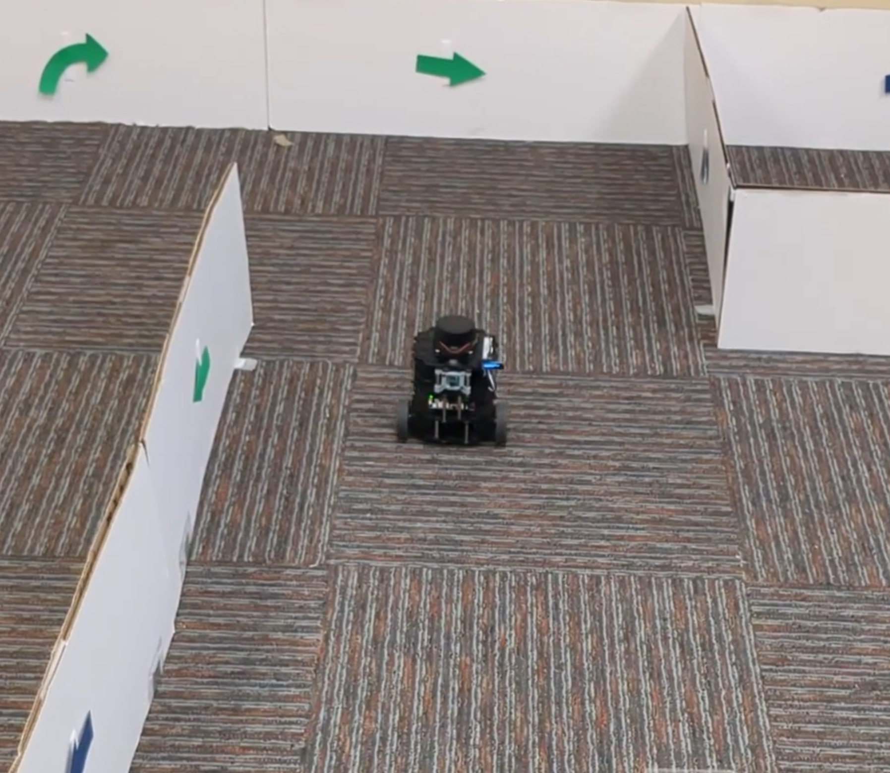
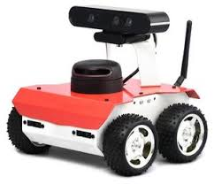
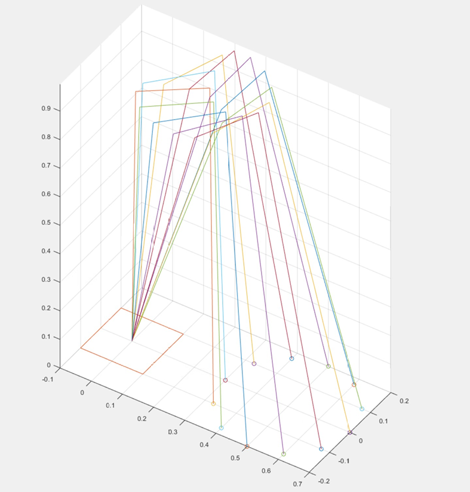
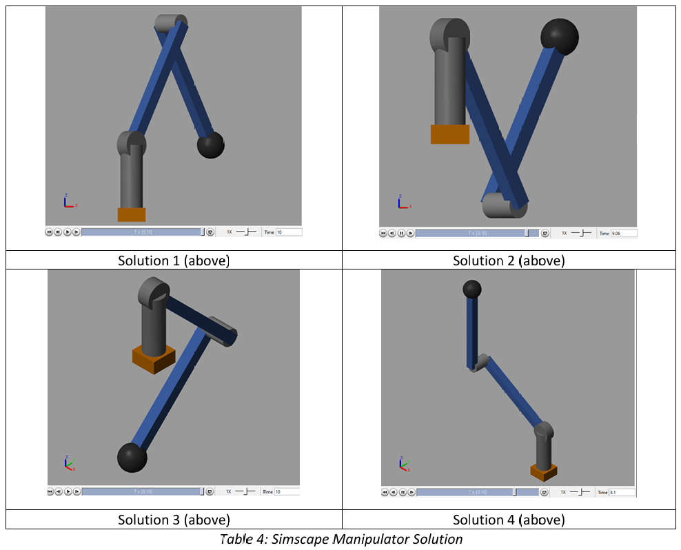
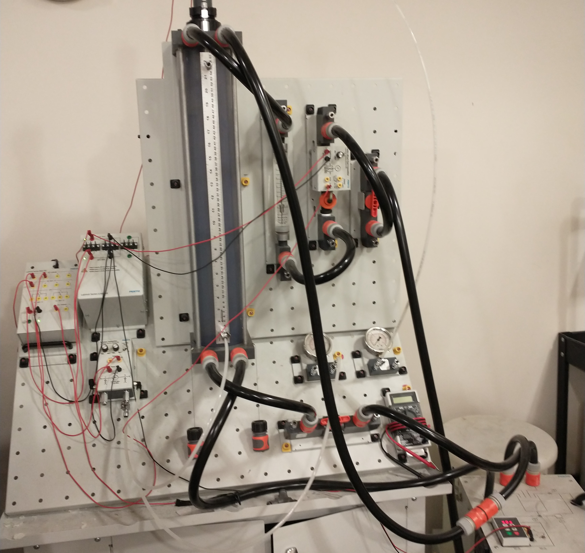
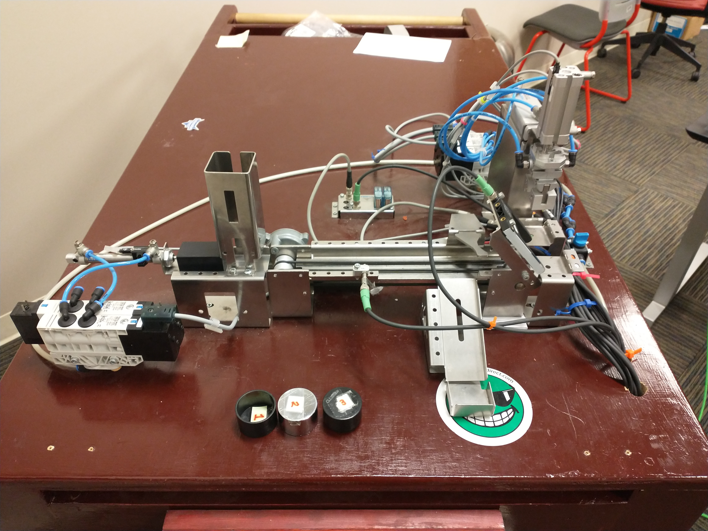

Robotic Operating System (ROS), Mobile Robotics, Modeling and Control
Mobile Robotics
Autonomous navigation, perception, and closed-loop control.

Autonomous Maze Navigation Robot
This project focused on developing an autonomous maze-navigation system for a mobile robot as the final capstone for my Robotics Research course at Georgia Tech. The robot successfully navigated complex environments by combining LiDAR-based obstacle detection, vision-based sign recognition, and odometry-driven motion control (robot perception, computer vision, machine learning, sensor fusion, autonomous navigation algorithms). The full system was implemented in Python using a modular ROS2 node architecture for real-time decision-making and control (ROS2 development, robotics software engineering).

SLAM-Based Mobile Robot Navigation
This project focuses on implementing autonomous robot navigation using SLAM-generated maps, enabling a mobile robot to localize itself, plan paths, and navigate to predefined goal positions. A custom ROS2 node was developed to sequentially read goal poses from a file, publish them to the navigation stack, and verify successful arrival using real-time feedback. The system was validated in both simulation and real-world environments using TurtleBot3, demonstrating end-to-end autonomy from mapping to goal execution.

Dead Reckoning & Obstacle Avoidance
This project implements autonomous waypoint navigation for a mobile robot operating in an environment with unknown obstacles. Using onboard odometry and dead reckoning, the robot estimates its global position and navigates through a sequence of goal points defined in a file. A combination of real-time obstacle detection and multiple PID controllers enables the robot to reach each waypoint safely while maintaining stability, accuracy, and timing constraints.
PID-Controlled Object Chaser
This project implements a real-time object-following system in which a mobile robot detects and tracks a blue ball using computer vision and LiDAR. By fusing camera and range sensor data, the robot estimates the object’s position in its local frame and uses PID controllers to maintain both orientation and a desired following distance. The system demonstrates robust perception and control through continuous visual tracking and adaptive motion.

KNN Vision Classifier for Robotics
This project implements a computer vision-based image classification system for recognizing directional signs in a robotics maze navigation task. Using a K-Nearest Neighbors (KNN) model, the system classifies images into navigation-relevant categories, enabling downstream decision-making for autonomous robots. Multiple models were trained and evaluated across datasets, with performance-driven selection of the final model for deployment. This model was utilized in the autonomous maze navigation project shown above.

ROSbot with Right Wall Following Algorithm
A right-wall-following navigation algorithm for a mobile robot as part of an undergraduate mechatronics course at Kennesaw State University. The system was developed using ROS1 on a ROSbot, processing real-time LiDAR data from a RPLIDAR A2 to generate velocity commands in C++. The controller enabled reactive wall-following and obstacle avoidance based on sampled scan points and was validated in both physical testing and Gazebo.

Vex Robotics Competition - The Unicorn
Team designed, constructed, and programmed a clawbot capable of remotely-controlled and autonomous tasks that ended up winning first prize in the semester school-wide Vex Robotics competition.
Modeling & Control
Kinematic, dynamic, and trajectory-based control of robotic systems.



Robot Arm Dynamics & Torque Analysis
Full dynamic modeling and inverse dynamics computation.

Color Sorting Robot
Utilized an Arduino microcontroller and various components to wire and program a robot that can autonomously sort disks of various colors into its corresponding bin.

Bottling Simulation on Siemens PLC Trainer
Programmed a PLC to control various components on a test bench to simulate a bottle filling conveyer belt system.

LabVIEW FESTO Process Control Training Bench
Utilize a PID controller in LabVIEW to control the flow, pressure, temperature, and vibration of a FESTO process control training bench to maintain a desired tank level.

Pick and Place PLC Pneumatic System
Programmed a PLC and graphical HMI to control the pneumatic cylinders and conveyer belt to simulate a manufacturing process that moves parts around, rejects poor components, and assembles a final product.